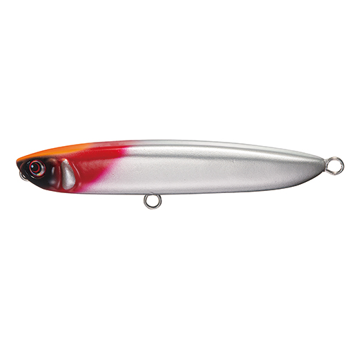
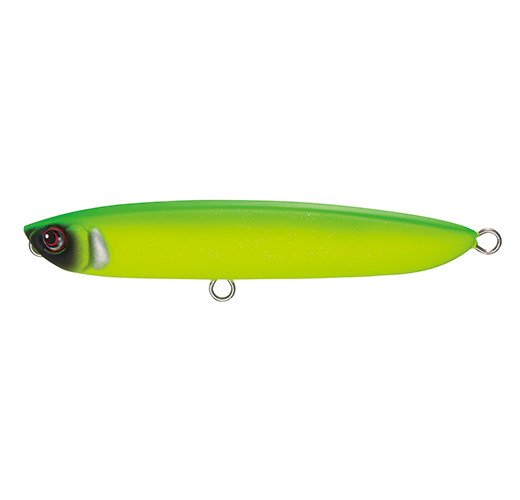
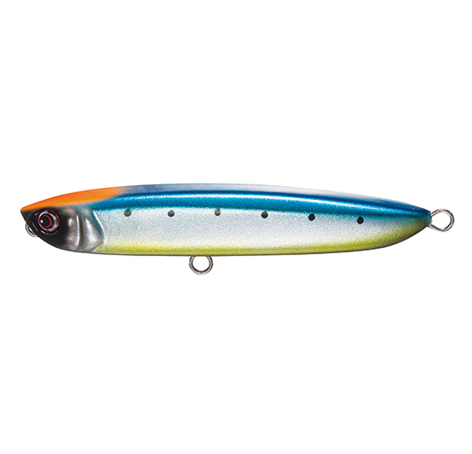
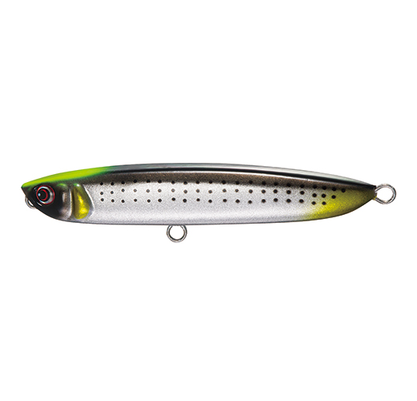

ズバット105F
（ZUBAT 105F）
ズバット105F（ZUBAT 105F）はPazdesign（パズデザイン）のルアーブランド「reed」のトップウォーターペンシルです。
テスターの森大介さんと山田英樹さんが手がけたモデルで、魚種を問わず誰でも扱いやすく、キレのあるエスケープウォークで水面に誘えるのが最大の魅力です。

画像出典:Pazdesign公式HP
スペック
- メーカー
- Pazdesign（パズデザイン）reed
- タイプ
- トップウォーターペンシル（フローティング・斜め浮き）
- 全長
- 105mm
- 自重
- 16g
- フック
- トレブル#5
- リング
- #3
- アクション
- エスケープウォーク
- ボディ
- 硬質発泡（日本製）
- ターゲット
- シーバス・クロダイ・青物
- 価格
- 4,840円（税込）
- 発売
- 2026年11月
▼今すぐチェック

ズバット105Fの特徴
高浮力ボディでキレよく動く、魚種を問わないトップウォーターペンシル
-
キレのあるエスケープウォーク
ボディの形状と高浮力の硬質発泡素材で、ロッドワークに対してキレよく反応する。小魚が逃げまどうようなエスケープウォークで、水面の魚にスイッチを入れる。
-
大物にも安心のステンレス貫通ワイヤー
内部にステンレスワイヤーを貫通させ、ウエイトも固定成型。大型のシーバスや青物が掛かっても安心してやり取りできる作りになっている。
-
誰でも扱いやすい斜め浮き
水面では斜めに浮く姿勢で、軽いトゥイッチでも首を振りやすい。トップウォーターに慣れていない人でも動かしやすく、シーバス・クロダイ・青物と幅広い魚に使える。
ズバット105Fの使い方
キャストしたら、ロッドを軽く小刻みにあおってラインスラックを弾くように操作し、左右に首を振らせながら逃げるように動かすのが基本です。
テンポよく連続で動かすと逃げる小魚、少し止めを入れると弱った小魚を演出できます。魚が出ても乗らない時は、止めの時間を長めにとってみましょう。
ズバット105Fの得意な状況
朝夕のマズメに、ベイトを追ってシーバスや青物が水面を意識している場面が出番です。
干潟や河口のシャローでクロダイを水面で狙う釣りにも使え、魚種を問わず水面で釣れる楽しさを味わえるペンシルです。
105mm・16gのほどよいサイズなので、イワシやカタクチなど中型のベイトに合わせやすいのも強みです。
ワンポイント
水面に出ても乗らない時は、すぐにアワせず、重みが乗ってから巻きアワセするのがコツです。トップウォーターはバイトが見えるので、早アワセになりがちです。
人気カラー
ズバット105Fの人気カラーを紹介します。

パワーRHパールOHピンクバックのパール系。朝夕のマズメや濁りで目立たせたい時に。

マットハルクギラつきを抑えたマット系。日中やスレた魚に試したい1色。

パワーイワシOHイワシをベイトにしている時に合わせやすいリアル系。

セレブコノシロCHコノシロなど大きめのベイトを意識した時に。
画像出典:Pazdesign公式HP
▼今すぐチェック
ズバット105Fに似ているルアー
-
 オセロスペンシル85F
シマノ
詳細はこちら＞
オセロスペンシル85F
シマノ
詳細はこちら＞
ドッグウォークからダイブまで5つのアクションを出せる一口サイズのペンシル。小さいベイトの時に。
-
 オセロスペンシル130F
シマノ
詳細はこちら＞
オセロスペンシル130F
シマノ
詳細はこちら＞
強度4Xフックのヘビーデューティーなペンシル。もっと大きなシルエットで青物を狙う時に。
-
 フォースガイル160F
ブルーブルー
詳細はこちら＞
フォースガイル160F
ブルーブルー
詳細はこちら＞
幅の広いS字軌道で誘うペンシル。大型ベイトに付いたシーバスを狙う時に。